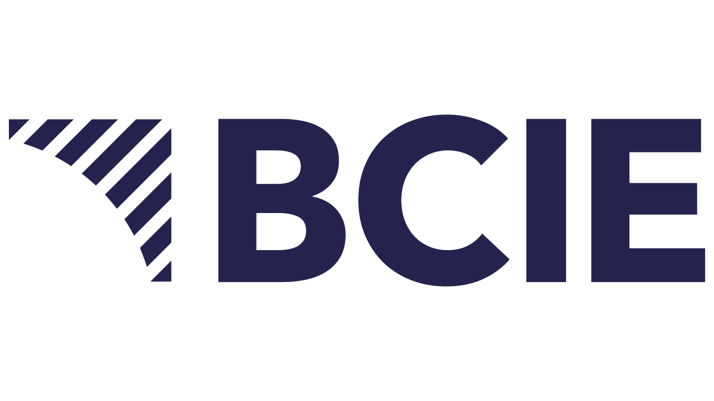

Inspirar
Compartir ideas, historias y experiencias que ayuden a ver nuevas posibilidades.
Prepared exclusively for

Las grandes transformaciones comienzan con grandes conversaciones.
Un espacio donde líderes, emprendedores y expertos analizan los desafíos y oportunidades que definirán el futuro de nuestra región.
Pero también cuenta con personas, ideas y proyectos capaces de construir soluciones extraordinarias.
Compartir ideas, historias y experiencias que ayuden a ver nuevas posibilidades.
Reunir especialistas de distintas disciplinas para enriquecer la conversación.
Generar conversaciones capaces de inspirar acción, colaboración y progreso.
Siete episodios en formato Q&A y mesa redonda, moderados por Xavier Serbia, con dos especialistas externos por episodio.
El BCIE convoca distintas voces alrededor de los grandes desafíos del desarrollo y convierte ese liderazgo en una plataforma editorial con alcance regional.

Xavier diseña conversaciones que conectan ideas, desafían perspectivas y ayudan a transformar temas complejos en discusiones relevantes, cercanas e inspiradoras para la audiencia.
Contenido principal para las plataformas del proyecto.
Fragmentos cortos para redes sociales y difusión.
Ideas clave transformadas en contenido editorial.
Contenido diseñado para ampliar el alcance regional.
Un archivo de conversaciones para consulta futura.
No buscamos producir solamente siete episodios. Buscamos construir una plataforma de conversaciones que inspire el desarrollo de nuestra región.